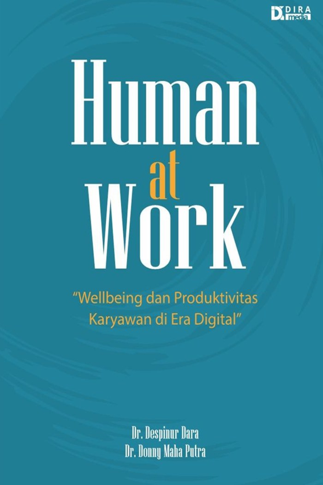

Human at Work: Wellbeing dan Produktivitas Karyawan di Era Digital
Dr. Despinur Dara and Dr. Donny Maha Putra · Editor: Prof. Dewi Susita
Companies talk about employee well-being more than ever, with meditation apps, yoga sessions, and happiness surveys. Yet more people come home from work with a tiredness that sleep does not fix. This book offers an honest answer: workers are constantly asked to be tougher and better at managing their time, when the real source of the problem is often how the work is designed, how leaders lead, and how technology is used at work. The examples come from Indonesian working life, from civil servants and lecturers to small business owners and ride-hailing drivers.